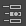

灯光编辑器列出了场景中的所有灯光，以及每个灯光的一组常用属性。选择灯光，并在“灯光编辑器”(Light Editor)右侧的“特性编辑器”(Property Editor)中调整其属性。 单击  以重新打开已关闭或已收拢的“特性编辑器”(Property Editor)。
若要将多个灯光的某个属性设置为相同的值，请选择要调整的所有灯光。 在“特性编辑器”(Property Editor)中设置的任何值都会自动应用到所有选定的灯光。
如果您使用的是“渲染设置”(Render Setup)系统，也可以使用“灯光编辑器”(Light Editor)覆盖渲染层的灯光属性。请参见 Maya 渲染设置或在渲染层中创建灯光覆盖。